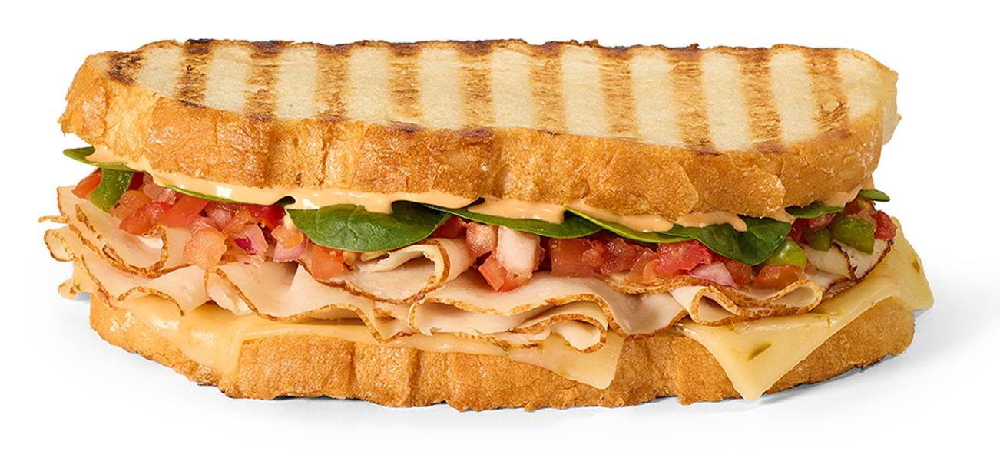

Turkey Cali Panini

A melty sandwich loaded with oven-roasted turkey, crisp bacon, spicy pepper jack cheese, and fresh veggies, all pressed into warm golden panini bread with smoky chipotle sauce.
Ingredients
- Panini bread
- 6 oven-roasted turkey deli slices
- Fresh spinach
- 2-3 tomato slices
- Thinly sliced red or white onion
- 2 slices pepper jack cheese
- 3 strips cooked bacon
- Chipotle sauce
- Olive oil
Steps
- Preheat a panini press or grill pan over medium heat.
- Slice bread in half lengthwise.
- Spread chipotle sauce on both inner sides of the bread.
- Layer turkey, bacon, cheese, spinach, tomato, and onion evenly.
- Close the sandwich and put some oil on the top and bottom.
- Grill in the panini press or on the pan with a weight on top for 3–5 minutes per side, until golden and the cheese is melted.
- Done
Home